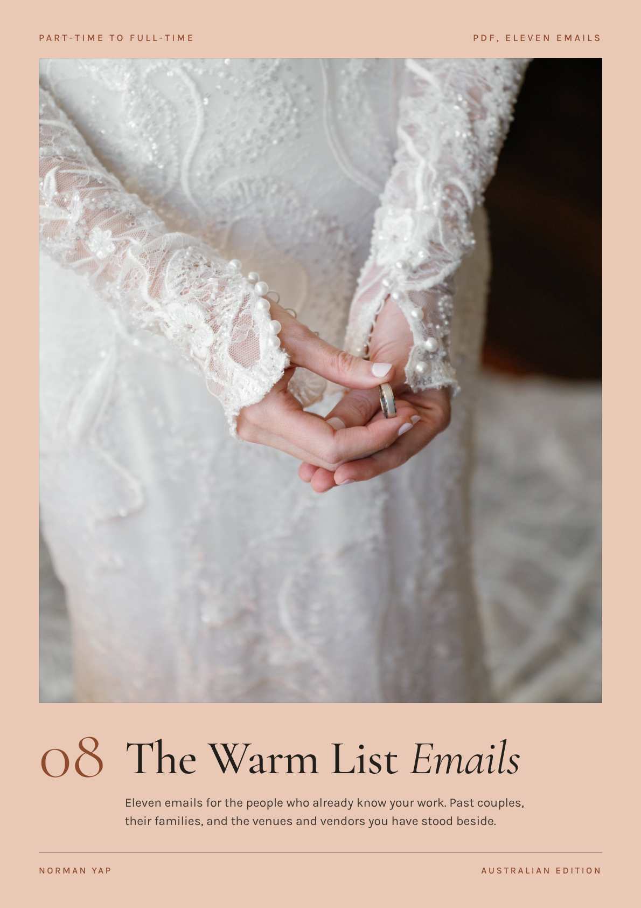
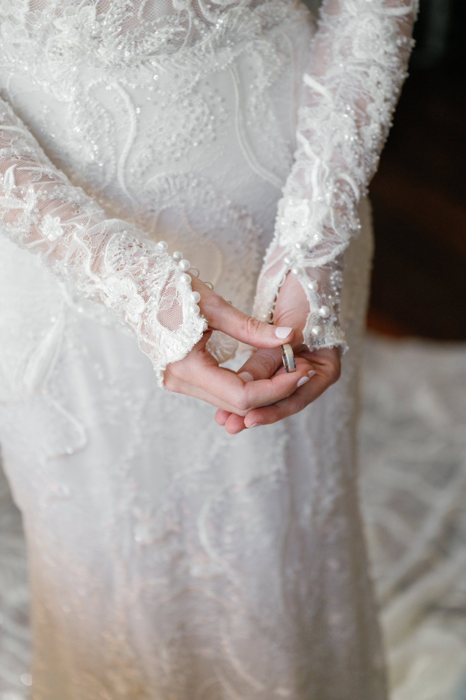

Eleven emails for the people who already know your work. Past couples, their families, and the venues and vendors you have stood beside.
| 1 | Start here | How this works, and the three rules behind every email |
| 2 | Build your list | Thirty minutes, six groups, and the map of all eleven emails |
| 3 | Part one: past couples | Emails 1 to 7, from the gallery follow-up to the newly engaged guest |
| 4 | Part two: venues and vendors | Emails 8 to 11, from the venue gallery to the open dates swap |
| 5 | The sending plan | Two weeks, one group a day, then the routine after every wedding |
Open this, find the person, change the line in brackets, press send.
Your warm list is everyone who has already seen you work. Couples you have photographed. Their families and their wedding parties. The venue, the planner and the vendors who stood beside you on the day.
When the calendar has a gap, most photographers go looking for strangers. Strangers take the longest to say yes. The people on your warm list already know what your photographs look like and how you behave at a wedding, and most of them have heard nothing from you since the gallery went out.
The Booking Pack and the Follow-Up Vault cover a new enquiry, from the first message to the signed contract. These eleven emails start after the wedding.
The first line is about them. A frame, a moment, something they did on the day. It proves the email was written for one person.
Each email carries one thing. If there is an offer, it ends on a real date. Never invent a deadline. Pick one you will keep.
A booking link asks them to decide. A reply costs them nothing, and it starts a conversation you can finish.
Thirty minutes with a spreadsheet or a notebook. You are looking for names, one date and one true detail for each.
| Who | Where to find them | Write down |
|---|---|---|
| Couples from the last five years | Your CRM, your gallery host, your calendar | Names, wedding date, venue, one frame you remember |
| Couples who now have children | Their last message, their social accounts | The children's names, the month you last spoke |
| Wedding parties and close guests | The family formals list, tagged photographs | Anyone who has become engaged since |
| Venues | Your calendar | The coordinator's name, the last date you worked there |
| Planners and vendors | The vendor list from each wedding | Name, what they did, one frame of their work |
| Photographers you trust | People you have second shot for or referred couples to | Their style, their busy months |
Count each row. Start with the smallest group and write every email in it by hand before you move to the next. Small groups are where you learn which line gets the reply.
Every email in this pack, who it goes to and when. Part one is emails 1 to 7. Part two is emails 8 to 11.
| Send to | When | ||
|---|---|---|---|
| 1 | The gallery follow-up | Couples from the last season | Six weeks after delivery |
| 2 | The album and print window | Past couples without an album | Before a real lab order date |
| 3 | The anniversary note | Couples married one to five years | Three weeks before their date |
| 4 | The review ask | Couples who loved their gallery | Two weeks after delivery |
| 5 | The introduction | Couples who have replied warmly | The week after that reply |
| 6 | The family session invitation | Couples who now have children | Once a year, before a school holiday |
| 7 | The newly engaged guest | Someone from a past wedding party | Inside a week of the news |
| 8 | The venue gallery | The coordinator who ran the day | Inside two weeks of the wedding |
| 9 | The vendor thank you | The florist, stylist, celebrant, makeup artist | The week the gallery goes out |
| 10 | The open dates note | Planners and coordinators | Once a quarter at most |
| 11 | The open dates swap | Three photographers you trust | Once, then keep it current |

Seven emails for the people you have already photographed, and the people who stood beside them.
The gallery goes out, the couple says thank you, and the conversation ends there. Six weeks later they have looked at every frame and chosen their favourites. This email reopens the conversation, and their answer tells you which photographs to show the next couple.
Hi [Partner 1] and [Partner 2],
PERSONAL [One frame from their gallery and why it stays with you. Example: "The one of your dad fixing your veil on the steps. He had no idea I was there."]
I'd love to know which one is yours. Couples almost never pick the one I expect.
If you are thinking about prints or an album, my next order goes to the lab on [order date]. Reply with your favourites and I will put a layout together for you to look at. There is no obligation.
[Your first name]
Hi [Partner 1], [Your first name] here. I sent you a note about my favourite frame from your wedding, with one question. It's in your inbox whenever you have a minute.
Skip it when: you had this conversation at delivery, or the gallery went out less than a month ago.
An album is the purchase most couples mean to make and never get to. A real order date gives them a reason to decide this month. The email also takes the work off them, because choosing the photographs is the part that stops people.
Hi [Partner 1] and [Partner 2],
My next album and print order goes to the lab on [order date], and I wanted to check in with you before it does.
PERSONAL [One line about their wedding that belongs in print. Example: "Your ceremony on the lawn would open an album beautifully."]
Here is how it works. You choose [number] favourites, or I choose them for you. I design the layout and send it to you to change. Nothing is ordered until you are happy with every page.
Reply by [reply-by date] and I will start your design.
[Your first name]
Skip it when: they already have an album, or you have no real order date. Set one with your lab first.
The anniversary is the one date you both remember. Writing three weeks ahead leaves them time to book something before it arrives. The photograph comes first because it proves the email is for them.
Hi [Partner 1] and [Partner 2],
[One year] ago this [Saturday] you were [where they were in one frame. Example: "standing at the top of the stairs at the venue"], and I still think about that frame.
I am opening a small number of anniversary sessions in [month]. An hour, somewhere that matters to you both, and a gallery inside [turnaround].
I am holding them for couples I have already photographed until [date]. If you would like one, reply and I will send the days I have free.
Either way, happy anniversary to you both.
[Your first name]
Hi [Partner 1], it's [Your first name]. [One year] this [Saturday]. I have sent you a note about anniversary sessions in [month]. No rush, it's in your inbox.
Skip it when: their gallery went out less than six months ago, or you have nothing open in the month you name.
Couples who have never heard of you read reviews before they write to you. Most happy couples would leave one, and nobody asks them. Three questions make it easy to write, and the answers read like a story.
Hi [Partner 1] and [Partner 2],
I am so glad you love the gallery.
Could I ask a small favour? A short review on [review site] helps other couples find me, and it would mean a great deal coming from you.
If you are not sure what to write, these three questions are enough.
What were you worried about before the wedding?
What was it like having me there on the day?
How did you feel when you opened the gallery?
Here is the link: [review link]. Two or three sentences is plenty.
Thank you both.
[Your first name]
Skip it when: anything went wrong that you have not put right. Fix it first, then ask.
A couple who has just married usually knows the next couple to get engaged. They will mention you if they think of it. This email makes sure they think of it, and it asks for a name so the next step is yours.
Hi [Partner 1],
Thank you for [what they said. Example: "the lovely message about the gallery"]. It made my week.
One more thing. PERSONAL [One true line about what referrals mean to you. Example: "My favourite weddings have all come through couples like you two."]
If someone close to you gets engaged and you think we would get along, I would love an introduction. A reply with their name is all it takes. I will write to them myself and tell them you sent me.
[Your first name]
Skip it when: they have not replied to anything since the wedding. Earn the reply first with email 1.
Couples become families. You are the photographer they already trust, and the last one they would think to ask unless they know you do this work. Offering it to them before anyone else is true, and it reads as a favour.
Hi [Partner 1] and [Partner 2],
PERSONAL [One line that shows you have kept up. Example: "I saw the photo of Isla on the beach and could not believe how big she is."]
I am setting aside [number] mornings in [month] for family sessions, and I am offering them to couples I have photographed before I open them to anyone else.
[Session length], [location, or "somewhere you love"], and a gallery inside [turnaround].
The dates are [date 1] and [date 2]. If one suits, reply and I will hold a time for you.
[Your first name]
Skip it when: you do not want family work. Sending this teaches your whole list that you do.
A bridesmaid or a best man has watched you work for a whole day. That tells them more than any website can. The email only works if you can name one true thing about them from that day.
Hi [Name],
[Your first name] here. I photographed [Couple]'s wedding at [Venue], where you [what they did. Example: "gave the speech that had the whole room in tears"].
I saw the news. Congratulations to you and [Partner].
If you are starting to think about photographs, I would love to hear what you are planning. Do you have a date or a season in mind yet?
[Your first name]
Hi [Name], [Your first name] here, from [Couple]'s wedding. I saw the news and wanted to say congratulations to you both. If you are starting to think about photographs, I would love to hear what you are planning.
Skip it when: you cannot name one true thing about them from the day. Without it, this is a message from a stranger.
Four emails for the people who are asked, every week, to recommend a photographer.
Planners and venues refer the people who make their job easier. This email gives before it asks. The coordinator gets photographs they can use this week, and the request sits in one line at the end.
Hi [Coordinator],
Thank you for looking after us on [date]. PERSONAL [One specific thing they did. Example: "Moving the ceremony inside with twenty minutes' notice, and making it look planned."]
I have put [number] photographs of the venue and the day in a gallery for you: [link]. They are sized for your website and your socials, and you are welcome to use them with a credit to [@handle].
If a couple touring the venue asks about photography, I would love to be on your list.
[Your first name]
Skip it when: the couple has asked for their photographs to stay private. Ask them first, every time.
Vendors rarely get good photographs of their own work. A small gallery costs you ten minutes, and your name appears every time they post from it. The last line tells them you will look out for them next time, which is what a referral partner wants to hear.
Hi [Name],
PERSONAL [One line about their work on the day. Example: "The arch held in that wind and looked better for it."]
I have pulled [number] frames of your work into a small gallery: [link]. They are yours to use, with a credit to [@handle] where you can.
If there was a shot you needed and I missed it, tell me. I will look for it the next time we work together.
[Your first name]
Skip it when: the couple has asked for privacy, or you have no frame that shows their work well. Send a thank you without the gallery.
Planners and coordinators get asked for a photographer at short notice. They recommend whoever they know is free and easy to work with. This tells them, in under a minute, without asking for a meeting.
Hi [Name],
A quick one. I still have a few dates open this [season], and I would rather you heard it from me than had to ask.
[Date 1]
[Date 2]
[Date 3]
If a couple comes to you without a photographer for any of those, I would love the introduction. I will look after them the way we looked after [Couple from a wedding you shared].
[Your first name]
Skip it when: you have not worked with them in the past year. Send email 8 or 9 after your next wedding together, then this one.
Every photographer turns down dates they are already booked for. Those couples still need someone, and they will take a name from the person they wanted. A standing swap means the name they hear is yours.
Hi [Name],
PERSONAL [One line about their recent work. Example: "The reception frames from your last wedding at the winery were something else."]
When an enquiry lands on a date I already have booked, I would rather send that couple to someone I trust. I think our couples would like each other.
Would you be open to swapping open dates? I will send you mine for the next six months, you send me yours, and when either of us is booked we pass the couple on.
Mine are below.
[Your open dates]
[Your first name]
Skip it when: you would not hand your own sibling's wedding to them. Your name travels with every referral.
The emails work best in small batches. Write each one by hand, send it from your own inbox, and leave the afternoon free to answer what comes back.
| Day | Do this | |
|---|---|---|
| 1 | Build your list. No email today | |
| 2 | Write to every couple from last season you have not spoken to since delivery | 1 |
| 3 | Write to every couple with an anniversary in the next eight weeks | 3 |
| 4 | Set a real order date with your lab, then write to couples without an album | 2 |
| 5 | Answer everything that has come back. Send the introduction to anyone who replied warmly | 5 |
| Day | Do this | |
|---|---|---|
| 8 | Send a venue gallery for each of your last two weddings | 8 |
| 9 | Send a small gallery to every vendor from those weddings | 9 |
| 10 | Send your open dates to the planners and coordinators from the last year | 10 |
| 11 | Write to three photographers about swapping dates | 11 |
| 12 | Answer everything. Write to anyone from a past wedding party who is newly engaged | 7 |
Emails 4 and 6 have their own timing. The review ask goes two weeks after each gallery. The family invitation goes once a year.
Four of these emails belong in your routine after every wedding. Set the to-dos the day the gallery goes out, in your CRM or your calendar, and the warm list looks after itself.
| The day the gallery goes out, set a to-do for | |
|---|---|
| Today: the venue gallery and the vendor thank you | 8 and 9 |
| Two weeks from today: the review ask | 4 |
| Six weeks from today: the gallery follow-up | 1 |
| Three weeks before their first anniversary: the anniversary note | 3 |
For each email, write down how many you sent, how many replied and what came of it. After a season you will know which three emails are yours. Send those first next time.
| Sent | Replied | Came of it | |
|---|---|---|---|
| 1. The gallery follow-up | |||
| 2. The album and print window | |||
| 3. The anniversary note | |||
| 4. The review ask | |||
| 5. The introduction | |||
| 6. The family session invitation | |||
| 7. The newly engaged guest | |||
| 8. The venue gallery | |||
| 9. The vendor thank you | |||
| 10. The open dates note | |||
| 11. The open dates swap |